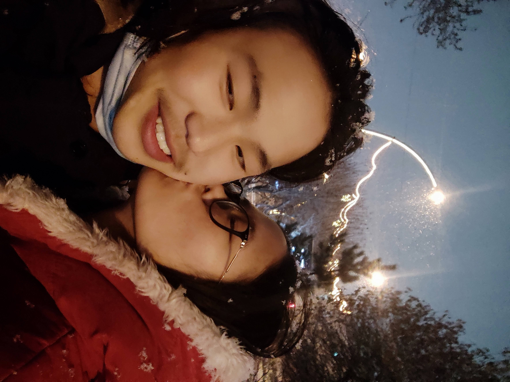
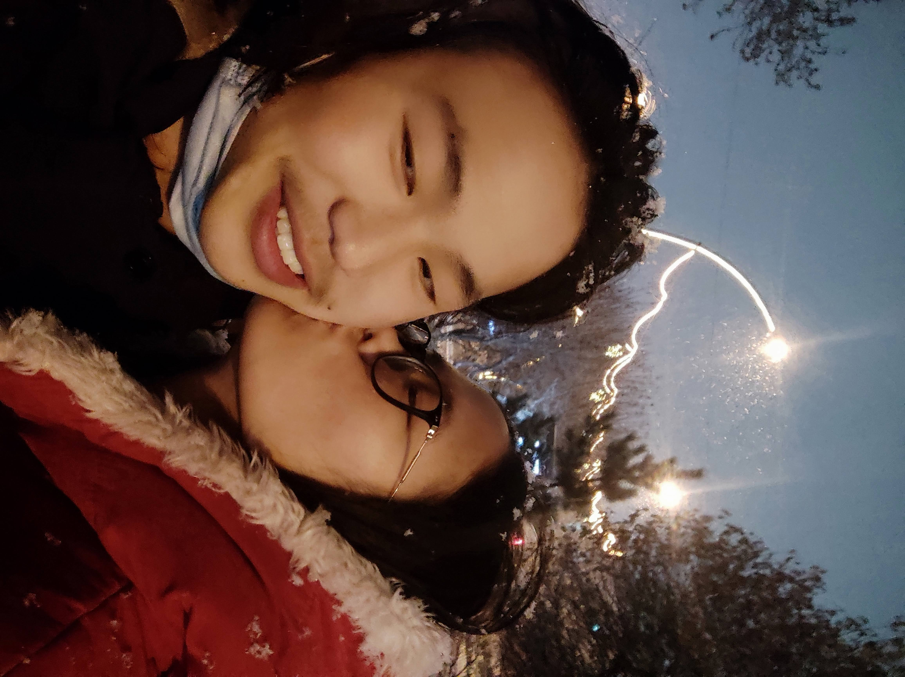
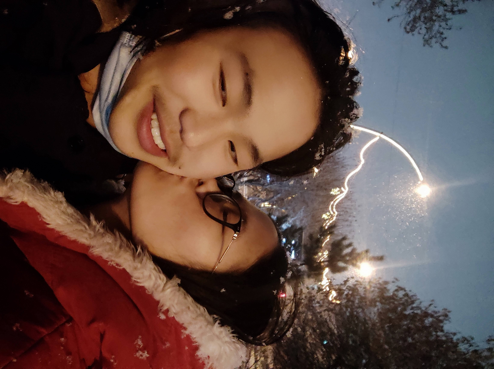

Нүүр хуудас
Намайг уучлаарай үгийн хэтэрхий хүндээр хүлээж аваад бүр дүрэлзчихлээ.
Зайлая гэсэн ч хамгийн худал үг шүү. Тгэж хэлсэнд уучлаарай. Хайр нь үнэхээр тэр сэдвийг л орхихийг хүссэн
шүү. Гэхдээ хайрын ашигласан үг үнэхээр таалагдсангүй гуниг уур давхацчихлаа. Уул нь утсаар ярьж байхад хайр
айн айн гэхээр уул нь инээд хүрээд байсан болохоор тэгэж аашлаагүй байх гэж бодсон. Гэхдээ ууралсан юм шиг
сонсогдсон ч байж болох нь мэдээж. Сонсогдуулхыг л хүссэн юм шүү. Ууртай сонсогдсон бол уучлаарай. Юм ассан
муухай сэдвийн тухайд би бүр дотроо маш их эмзэглээд байдаг. Өмнөхөө сөхөхгүй гэж хоёулаа л хичээдэг. Гэхдээ
хайр нь бүр хэтэрхий эмзэглэчихлээ. Миний 51%-г уучлах уу. :_(
Чамтайл үлдсэн насаа дуусгамаар байна. Чинийл уруулыг үнсэж өөрийхөө уруулыг жаргаамаар байна. Чам шиг хүнийг дахиж олж чадахгүй байж юунд найдаж ингэж муухай аашилдагаа мэдэхгүй байна. Би бол тэнэг. Гэсэн ч намайг хүлээж авсаар байдаг чи бол агуу. Чиний хажууд л наалдаад л байж баймаар нь. Яг энгэрт нь наалдаад дээшээ жоохон өлийхөд л чи харагддаг л баймаар байна. Би чамд маш их хайртай үнэхээр их. Санаад байхад дахиж муухай юм болох вий гэж бодохоор сэтгэл түгшээд байна. Чадахгүй байж новшийн аашилхаа яаж болихоо мэдэхгүй байна. Гэсэн ч намайг уучлаарай. Хааяа зовоон зовоон хамт байх гээд байгаад. But im crazy for you.
I you.
 

Чамтайл үлдсэн насаа дуусгамаар байна. Чинийл уруулыг үнсэж өөрийхөө уруулыг жаргаамаар байна. Чам шиг хүнийг дахиж олж чадахгүй байж юунд найдаж ингэж муухай аашилдагаа мэдэхгүй байна. Би бол тэнэг. Гэсэн ч намайг хүлээж авсаар байдаг чи бол агуу. Чиний хажууд л наалдаад л байж баймаар нь. Яг энгэрт нь наалдаад дээшээ жоохон өлийхөд л чи харагддаг л баймаар байна. Би чамд маш их хайртай үнэхээр их. Санаад байхад дахиж муухай юм болох вий гэж бодохоор сэтгэл түгшээд байна. Чадахгүй байж новшийн аашилхаа яаж болихоо мэдэхгүй байна. Гэсэн ч намайг уучлаарай. Хааяа зовоон зовоон хамт байх гээд байгаад. But im crazy for you.
I you.
